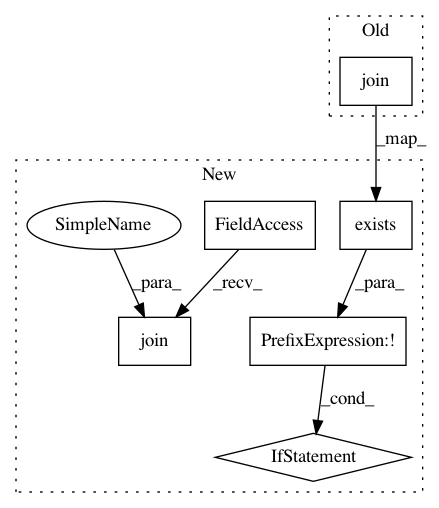

a560ccac0374b20c29d18d56ef2ed14cc809ab78,render.py,,,#,10
Before Change
// Output directories for visualizations.
PATH_TO_VISUALIZATIONS = "visualizations"
PATH_TO_CONV1_KERNEL = os.path.join(PATH_TO_VISUALIZATIONS, "0_conv1_kernel")
PATH_TO_CONV1 = os.path.join(PATH_TO_VISUALIZATIONS, "1_conv1")
PATH_TO_RELU = os.path.join(PATH_TO_VISUALIZATIONS, "2_conv1+relu")
PATH_TO_PRIMARY_CAPS = os.path.join(PATH_TO_VISUALIZATIONS, "3_primary_caps")
// Input directories for layer weights.
After Change
// Output directories for visualizations.
PATH_TO_ROOT = "visualizations"
PATH_TO_VISUALIZATIONS = os.path.join(PATH_TO_ROOT, PATH_TO_TEST_IMAGE)
if not os.path.exists(PATH_TO_VISUALIZATIONS):
os.mkdir(PATH_TO_VISUALIZATIONS)
PATH_TO_CONV1_KERNEL = os.path.join(PATH_TO_VISUALIZATIONS, "0")
PATH_TO_CONV1 = os.path.join(PATH_TO_VISUALIZATIONS, "1")
PATH_TO_RELU = os.path.join(PATH_TO_VISUALIZATIONS, "2")
PATH_TO_PRIMARY_CAPS = os.path.join(PATH_TO_VISUALIZATIONS, "3")
if not os.path.exists(PATH_TO_CONV1_KERNEL):
os.mkdir(PATH_TO_CONV1_KERNEL)
In pattern: SUPERPATTERN
Frequency: 3
Non-data size: 6
Instances
Project Name: bourdakos1/CapsNet-Visualization
Commit Name: a560ccac0374b20c29d18d56ef2ed14cc809ab78
Time: 2018-01-25
Author: bourdakos1@gmail.com
File Name: render.py
Class Name:
Method Name:
Project Name: dmnfarrell/pandastable
Commit Name: cc60011ce2ff74fc36c5fee45fd3b521457454bd
Time: 2019-04-25
Author: farrell.damien@gmail.com
File Name: pandastable/plugins/batchprocess.py
Class Name: BatchProcessPlugin
Method Name: batchPlot
Project Name: castorini/honk
Commit Name: 5c1a871f1aaa09f74205ac8e0a1955215211c464
Time: 2019-02-18
Author: ljj7975@gmail.com
File Name: keyword_spotting_data_generator/evaluation/evaluation_audio_generator.py
Class Name:
Method Name: main